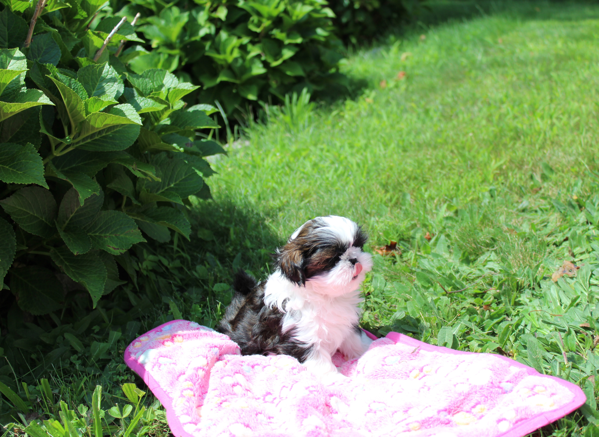
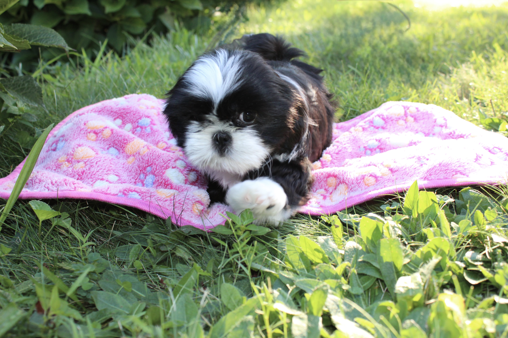
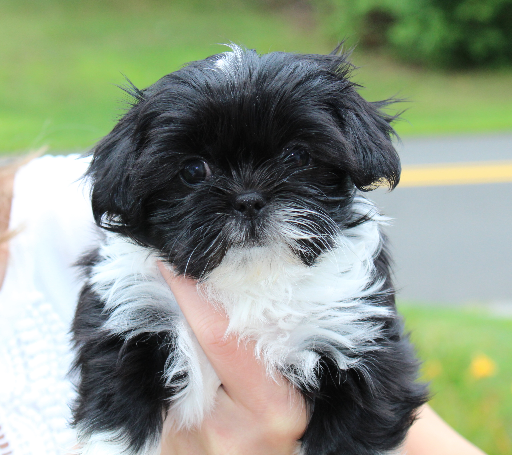

Home-raised with love
Homebrew Shih Tzu
Raising happy, healthy Shih Tzu puppies in our Connecticut home.
Learn About Our Puppies
A little about us
Raised in our home
We are a small, home-based breeder in North Central Connecticut, raising what we believe are some of the best dogs around — Shih Tzus. We believe puppies should grow up surrounded by people, attention, plenty of love, and all the little comforts that come with being part of a family.
We only plan a small number of litters each year, allowing us to give each puppy the individual care and attention they deserve.
Occasional litters
Our Puppies
We occasionally have a litter of Shih Tzu puppies raised right here in our home.
Because we only plan a small number of litters each year, puppies are not always available.
Bella's June 2026 Litter

Lady
Lady is Bella’s youngest born of her first litter. She is a sweet, friendly, playful little puppy who loves to explore and hop around happily. She was raised here in our family home with lots of playtime, attention, and plenty of people and Tzu companionship. She seems to enjoy the water and does surprisingly well with baths. Like a true little lady, she loves to have the song “She’s a Lady” sung to her! She is sure to bring all the love and personality to her new family.

Lima
Lima is the firstborn puppy from Bella’s first litter. From the moment she was old enough to tumble onto her back, she has loved belly rubs and playtime. Although she is currently the smallest of the litter, she knows she’s the oldest! Lima is spunky, friendly, and always on the lookout for a playmate. She can go from playful puppy antics to giving kisses in an instant. And just like her mama, she has the most beautiful eyes.
Want to see all of our puppies? View Our Puppies →
Get in touch
Thinking about adding a Shih Tzu to your family?
We'd love to hear from you and answer any questions you may have about our dogs and puppies.
Contact Us